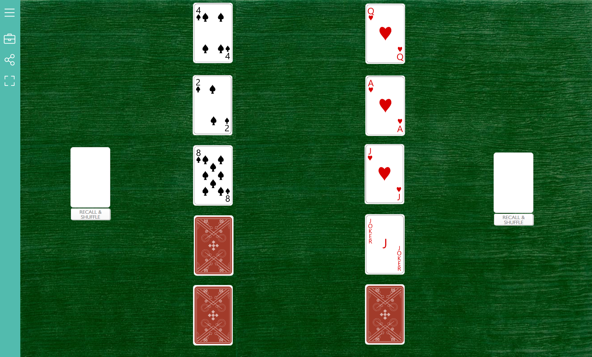

Column Combat is a 2-player gambling guessing game played with a total of 10 cards:
2, 4, 6, 8, 10, Jack, Queen, King, Ace, and Joker. Players are assigned a ‘column’ of either even number cards or non-number cards. After betting an equal amount of money, each player must guess a combination of 3, 4, or up to 5 cards in order before revealing their column. The number of cards guessed and whether the card sequence is correct or not determines the wins and losses of money.